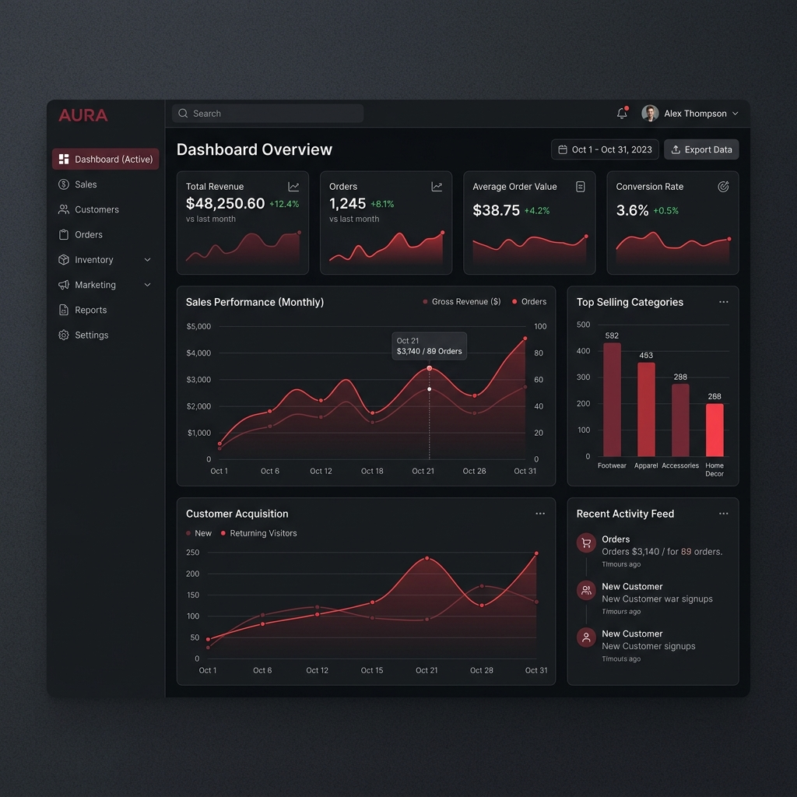
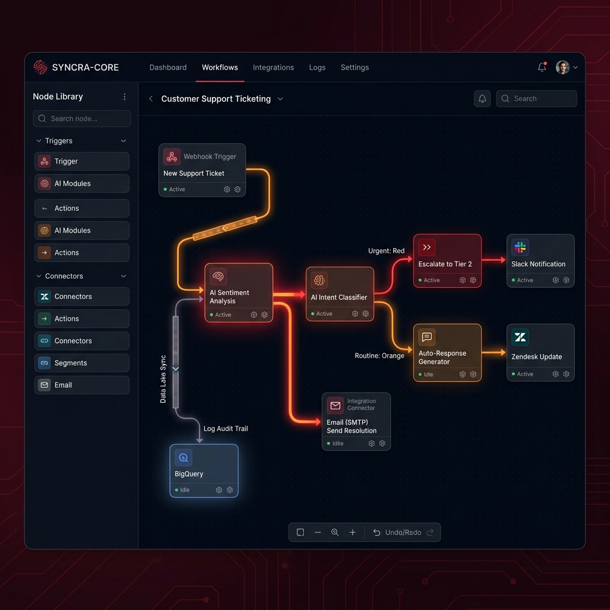

About FreshCart
FreshCart is a fast-growing direct-to-consumer e-commerce brand specialising in organic grocery and fresh produce delivery. With over 85,000 active customers across 12 cities, they handle high order volumes and complex logistics — generating a significant daily stream of customer support enquiries.
Founded in 2021, FreshCart scaled rapidly through word-of-mouth and performance marketing, but their support infrastructure hadn't kept pace with growth. By mid-2025, the support team — just 3 full-time agents — was fielding over 100 emails daily with consistent 18–24 hour response times.
A Support Team Overwhelmed at Scale
FreshCart's growth was a double-edged sword. More customers meant more revenue — but also exponentially more support queries. Their 3-agent team was handling 100–130 emails daily covering everything from order tracking and delivery delays to substitution queries, refund requests, and product complaints.
The 24-hour response window was becoming a critical business problem. Customer satisfaction scores had dropped from 4.5 to 3.1 out of 5 over six months. Cart abandonment increased as customers who couldn't get quick answers looked elsewhere. The team was burning out, spending time on repetitive queries when their expertise was needed for complex escalations.
The root issues were structural, not effort-based. The team was capable — they simply lacked the tools to operate at the scale the business demanded.
Strategy Built Around Their Exact Workflow
Before writing a single line of code, we spent two weeks embedded with the FreshCart support team — reading ticket archives, shadowing agents, and categorising query types. This gave us a precise picture of what the AI needed to handle, what required human judgement, and where the handoff boundary sat.
Our philosophy: AI should handle the predictable, humans should handle the exceptional. We designed the agent with a strict confidence threshold — any query below 92% classification confidence routes to a human agent with full context pre-loaded.
What We Built
We delivered a fully custom AI Support Agent — not an off-the-shelf chatbot, but a purpose-built system deeply integrated with FreshCart's order management system, product catalogue, and email platform.
AI Intent Classification Engine
Custom-fine-tuned model that classifies incoming emails into 14 intent categories with 96% accuracy. Extracts order IDs, product names, dates, and sentiment in under 200ms.
RAG Knowledge Base
Retrieval-Augmented Generation system built on 2,400+ product SKUs, full FAQ library, return policies, and 18 months of resolved support tickets. Updated weekly automatically.
Live Order API Integration
Real-time connection to FreshCart's order management system (Shopify + custom backend) allowing the agent to check order status, trigger refunds, and update delivery details autonomously.
Smart Human Escalation Router
Queries below 92% confidence, complaints with high negative sentiment, or complex multi-order issues route to human agents with full AI-generated context pre-loaded in Zendesk.
Real-Time Monitoring Dashboard
Live dashboard showing ticket volume, resolution rates, CSAT scores, escalation triggers, and agent performance — with daily and weekly automated reports via Slack.

Agent Dashboard
Workflow ArchitectureNumbers That Changed the Business
Within the first 30 days of full deployment, the results were measurable and significant. The support team shifted from reactive ticket-clearing to proactive quality oversight — reviewing escalations, improving knowledge base content, and contributing to product feedback loops.
The Stack Behind the Solution
Every technology choice was driven by FreshCart's existing infrastructure, performance requirements, and long-term maintainability. We avoided unnecessary complexity and chose proven components with strong support ecosystems.
AI & Machine Learning
Integrations & Infrastructure
Monitoring & Analytics
What FreshCart Had to Say
"We were sceptical that AI could handle the nuance of grocery customer support — substitutions, freshness complaints, hyperlocal delivery queries. Modo Minds proved us wrong. The agent doesn't just answer questions, it resolves them. Our team finally has the bandwidth to focus on the hard problems, and our customers actually notice the difference. CSAT going from 3.1 to 4.2 in two months is something we genuinely did not think was possible at this stage."